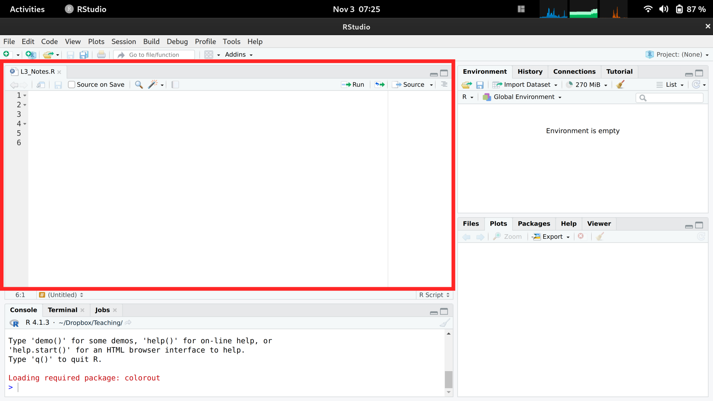

Code
sudo dnf install 'dnf-command(copr)'
sudo dnf copr enable iucar/rstudio
sudo dnf install rstudio-desktopYou should program your statistical analysis, and we will cover some of the basics of how to do this in R. You also want your work to be replicable
You can read more about the distinction in many places, including
We focus on R because it is good for complex stats, concise figures, and coherent organization. It is built and developed by applied statisticians for statistics, and used by many in academia and industry.
So my main sell to you is that being reproducible is in your own self-interest. For students, think about labor demand and what may be good for getting a job. Do some of your own research to best understand how much to invest.
First Install R. Then Install Rstudio.
For Fedora (linux) users, note that you need to first enable the repo and then install
sudo dnf install 'dnf-command(copr)'
sudo dnf copr enable iucar/rstudio
sudo dnf install rstudio-desktopMake sure you have the latest version of R and Rstudio for class. If not, then reinstall.
Rstudio is perhaps the easiest to get going with. (There are other GUI’s.)
In Rstudio, there are 4 panes. (If you do not see 4, click “file > new file > R script” on the top left of the toolbar.)

The top left pane is where you write your code. For example, type
1+1The pane below is where your code is executed. Keep you mouse on the same line as your code, and then click “Run”. You should see
> 1+1
[1] 2If you click “Run” again, you should see that same output printed again.
You should add comments to your codes, and you do this with hashtags. For example
# This is my first comment!
1+1 # The simplest calculation I could think ofYou can execute each line one-at-a-time. Or you can highlight them both, to take advantage of how R executes commands line-by-line.
As we proceed, you can see both my source code and output like this:
1+1
## [1] 2In later chapters, there are also special boxes for especially important statistical examples.
To understand each chunk of code:
You can create “variables” that store values. For example,
x <- 1 # Make your first variable
x + 1 # The simplest calculation I could think of
## [1] 2x <- 23 #Another example
x + 1
## [1] 24y <- x + 1 #Another example
y
## [1] 24Your variables must be defined in order to use them. Otherwise you get an error. For example,
X + 1 # notice that R is sensitive to capitalization
## Error:
## ! object 'X' not foundR Script file as My_First_Script.R in your folderAs you work through the material, make sure to both execute and save your scripts. Add lots of commentary to your scripts. Name your scripts systematically.
There are often many ways to accomplish the same goal. You first scripts will be very basic and rough, but you can edit them later based on what you learn. And you can always ask R for help
sum(x, 2) # x + 2
?sumWe write script in the top left so that we can edit common mistakes.
# Mistake 1: using undefined objects
Y
# Mistake 2: spelling and spacing
Y < - 43
Y_plus_z <- Y + z
# Mistake 3: half-completed code
x + y +
x_plus_y_plus_z <- x + y + z
# Seeing "+" in the bottom console?
# press "Escape" and try againYour variable names do not matter technically, but they should be informative to help avoid common mistakes.
In R: scalars, vectors, and matrices are different kinds of “objects”.
These objects are used extensively in data analysis
Vectors are probably your most common object in R, but we will start with scalars.
Make your first scalar
xs <- 2 # Make your first scalar
xs # Print the scalar
## [1] 2Perform simple calculations and see how R is doing the math for you
xs + 2
## [1] 4
xs*2 # Perform and print a simple calculation
## [1] 4
(xs+1)^2 # Perform and print a simple calculation
## [1] 9
xs + NA # often used for missing values
## [1] NANow change xs, predict what will happen, then re-run the code.
Make your first vector
x <- c(0,1,3,10,6) # Your First Vector
x # Print the vector
## [1] 0 1 3 10 6
x[2] # Print the 2nd Element; 1
## [1] 1
x+2 # Print simple calculation; 2,3,5,8,12
## [1] 2 3 5 12 8
x*2
## [1] 0 2 6 20 12
x^2
## [1] 0 1 9 100 36Apply mathematical calculations elementwise
x+x
## [1] 0 2 6 20 12
x*x
## [1] 0 1 9 100 36
x^x
## [1] 1.0000e+00 1.0000e+00 2.7000e+01 1.0000e+10 4.6656e+04In R, scalars are treated as a vector with one element.
c(1)
## [1] 1Matrices are also common objects
x1 <- c(1,4,9)
x2 <- c(3,0,2)
x_mat <- rbind(x1, x2)
x_mat # Print full matrix
## [,1] [,2] [,3]
## x1 1 4 9
## x2 3 0 2
x_mat[2,] # Print Second Row
## [1] 3 0 2
x_mat[,2] # Print Second Column
## x1 x2
## 4 0
x_mat[2,2] # Print Element in Second Column and Second Row
## x2
## 0There are elementwise calculations
x_mat+2
## [,1] [,2] [,3]
## x1 3 6 11
## x2 5 2 4
x_mat*2
## [,1] [,2] [,3]
## x1 2 8 18
## x2 6 0 4
x_mat^2
## [,1] [,2] [,3]
## x1 1 16 81
## x2 9 0 4
x_mat + x_mat
## [,1] [,2] [,3]
## x1 2 8 18
## x2 6 0 4
x_mat * x_mat
## [,1] [,2] [,3]
## x1 1 16 81
## x2 9 0 4Functions are applied to objects
# Define a function that adds two to any vector
add_two <- function(input_vector) { #input_vector is a placeholder
output_vector <- input_vector + 2 # new object defined locally
return(output_vector) # return new object
}
# Apply that function to a vector
x <- c(0,1,3,10,6)
add_two(input_vector=x) #same as add_two(x)
## [1] 2 3 5 12 8Common mistakes:
print(output_vector)
# This is not available globally
# Double check your spelling
x < - add_two(input_vector=X)
# Seeing "+" in the bottom console
# often means you forgot to close the function with "}"
# press "Escape" and try again
add_two <- function(input_vector) {
output_vector <- input_vector + 2
return(output_vector)
x <- c(0,1,3,10,6)
add_two(x)There are many different functions. Many of which functions have defaults.
add_scalar <- function(input_vector1, input_scalar2) {
output_vector <- input_vector1 + input_scalar2
return(output_vector)
}
add_scalar(x,3)
## [1] 3 4 6 13 9
add_scalar(x,4)
## [1] 4 5 7 14 10
add_scalar0 <- function(input_vector1, input_scalar2=3) {
output_vector <- input_vector1 + input_scalar2
return(output_vector)
}
add_scalar0(x)
## [1] 3 4 6 13 9
add_scalar0(x,4)
## [1] 4 5 7 14 10Perhaps the most common function we will use is summation
x
## [1] 0 1 3 10 6
sum(x)
## [1] 20Sometimes, we will use vectors that are entirely ordered. We make them with functions.
seq(1,7,by=1) #1:7
## [1] 1 2 3 4 5 6 7
seq(1,7,by=0.5)
## [1] 1.0 1.5 2.0 2.5 3.0 3.5 4.0 4.5 5.0 5.5 6.0 6.5 7.0
# Ordering data
sort(x)
## [1] 0 1 3 6 10
x[order(x)]
## [1] 0 1 3 6 10You can apply functions to each row or column of a matrix
x_mat
## [,1] [,2] [,3]
## x1 1 4 9
## x2 3 0 2
sum(x_mat[1,]) #sum first row
## [1] 14
sum(x_mat[,1]) #sum first column
## [1] 4
y_row <- apply(x_mat, 1, sum)
y_row
## x1 x2
## 14 5
y_col <- apply(x_mat, 2, sum)
y_col
## [1] 4 4 11You can see what a function does and various options with ?.
?seq
?apply Applying the same function over and over again
# Example 1: simple division
x <- vector(length=3)
#Fill empty vector
for(i in seq(1,3)){
x[i] <- i/2
}
x
## [1] 0.5 1.0 1.5
# Compare
# Example 2: exponential
#Create empty vector
x <- vector(length=3)
#Fill empty vector
for(i in seq(1,3)){
x[i] <- exp(i)
}
# Compare
x
## [1] 2.718282 7.389056 20.085537
c( exp(1), exp(2), exp(3))
## [1] 2.718282 7.389056 20.085537
# Example 3: using existing data
x <- c(1,3,9,2)
y <- vector(length=length(x))
for(i in seq_along(x) ){
y[i] <- x[i] + 1
}
y
## [1] 2 4 10 3A recursive example
x <- vector(length=4)
x[1] <- 1
for(i in seq(2,4) ){
x[i] <- x[i-1]^2
}
x
## [1] 1 1 1 1TRUE/FALSE
x <- c(1,2,3,NA)
x > 2
## [1] FALSE FALSE TRUE NA
x==2
## [1] FALSE TRUE FALSE NA
any(x==2)
## [1] TRUE
all(x==2)
## [1] FALSE
2 %in% x
## [1] TRUE
2==TRUE
## [1] FALSE
2==FALSE
## [1] FALSE
is.numeric(x)
## [1] TRUE
is.na(x)
## [1] FALSE FALSE FALSE TRUEThe “&” and “|” commands are logical calculations that compare vectors to the left and right.
x <- seq(1,3)
(x >= 1) & (x < 2)
## [1] TRUE FALSE FALSE
(x >= 1) | (x < 2)
## [1] TRUE TRUE TRUE
if( all(x >= 1) ){
print("ok")
} else {
print("not ok")
}
## [1] "ok"
logic_fun <- function(x){
if( all(x >= 1) ){
print("ok")
} else {
print("not ok")
}
}
logic_fun( seq(1,3) )
## [1] "ok"
logic_fun( seq(0,2) )
## [1] "not ok"For more on why to program in R, see
The most common programming tasks can be found https://github.com/rstudio/cheatsheets/blob/main/rstudio-ide.pdf
There are many good and free programming materials online. For help setting up, see any of the following links